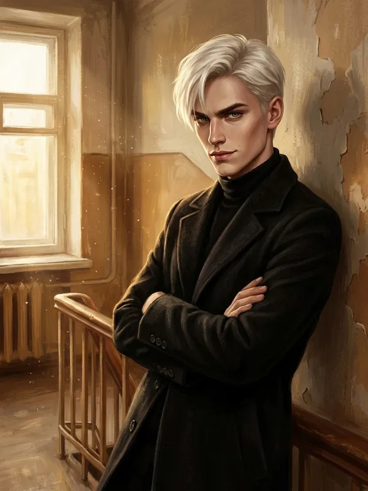
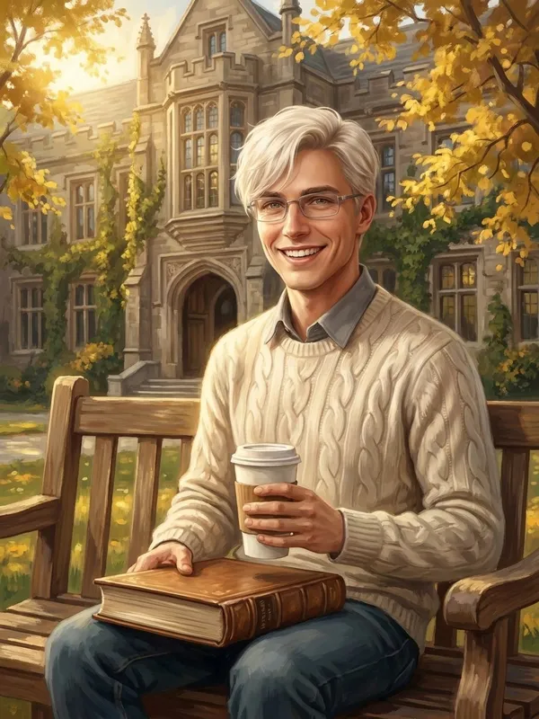

или
Тест на совместимость · 10 вопросов · без спойлеров
Кто тебе подходит: Артур или Антон?
Близнецы с одинаковым лицом и совсем разным сердцем. Один молчит и делает, другой улыбается и говорит. Ответь честно — и узнаешь, чьё сердце бьётся в такт с твоим.
Вопрос 1 из 10